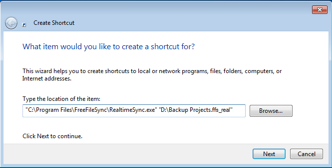
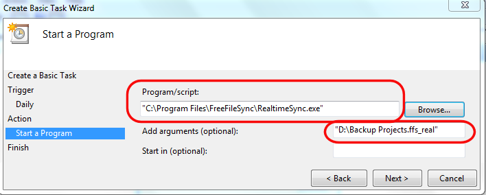

RealtimeSync is designed to run as a background process which does not need further
attention. Depending on your requirements there are a number of ways you can start it automatically.
Generally the goal is to execute a command line like:
<FreeFileSync installation folder>\RealtimeSync.exe <path to *.ffs_real or *.ffs_batch file>
Example:
"C:\Program Files\FreeFileSync\RealtimeSync.exe" "D:\Backup Projects.ffs_real"
RealtimeSync should be monitoring only while a specific user is logged in: Create a new shortcut, enter the command line from above as target and place it into the user's autostart folder.

RealtimeSync should be monitoring while Windows is running irrespective of currently logged in users: Create a new task in your operating systems's task scheduler and have it execute the command line above when the system starts. See Schedule a Batch Job for an example how to add a task. Then change the user which runs the task to SYSTEM - a special user account always running in the background.
